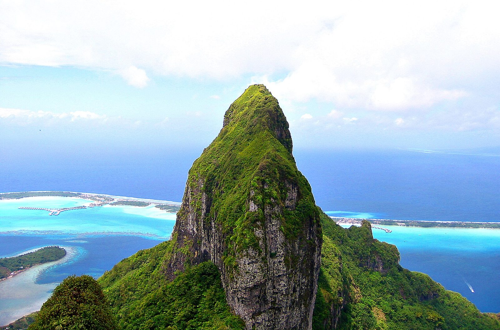
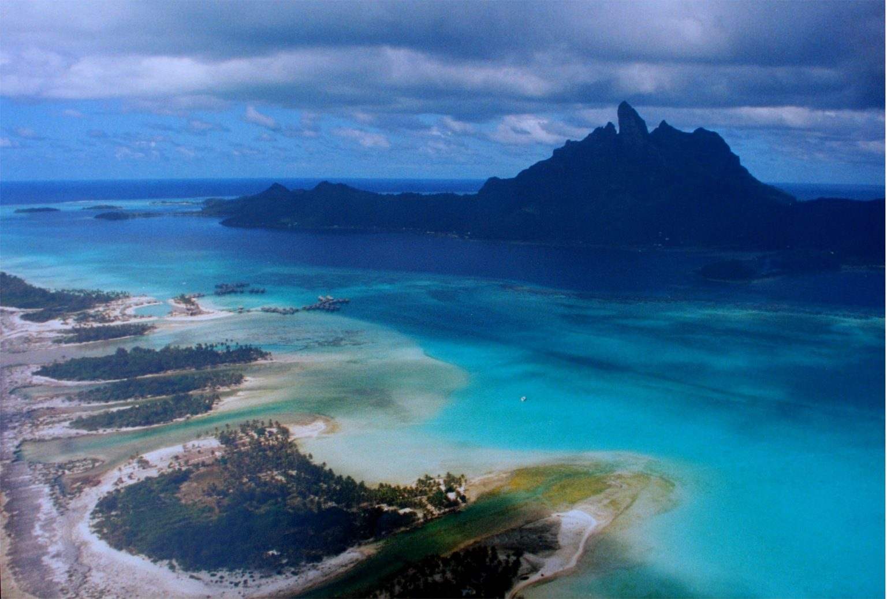
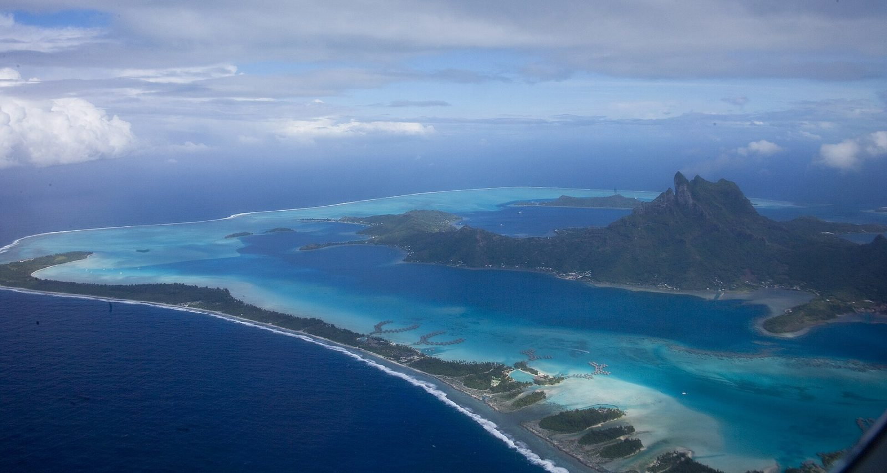
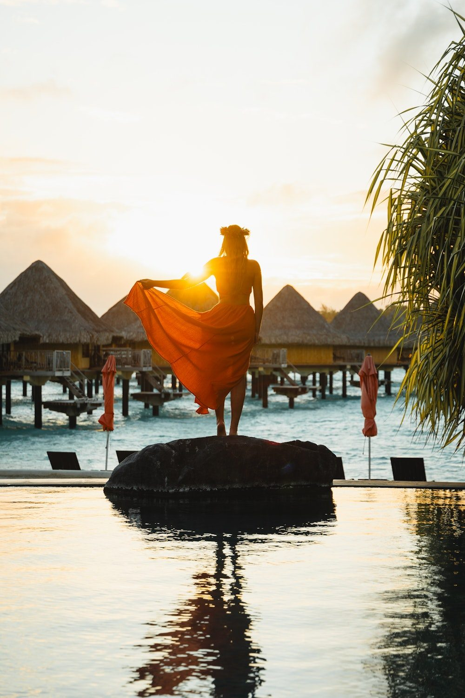
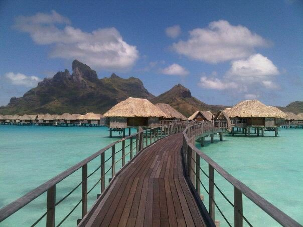

Arrive
Land in Papeete late (10:35p), overnight near the airport, fly to Bora Bora (~50 min) the next morning, boat transfer to your resort.
The most iconic overwater-bungalow destination on Earth — Mount Otemanu backdrop, turquoise lagoon, extremely quiet and private. The purest "do nothing, look at water" honeymoon on this list. About 6 nights on Bora Bora itself, closer to 9–10 door-to-door once you count the Papeete connections each way.


Shoulder: September–October (same dry-season pattern as Moorea/Tahiti).
Peak: July–August (same island chain, same crowd/price pattern).
Bora Bora has no international airport of its own — every routing goes through Papeete first, so the season logic is identical to the Tahiti page.
Even the most affordable overwater option on the island (InterContinental Le Moana, ~$800/night) runs lodging alone to about $4,800 for 6 nights; add food, excursions, and a Papeete hotel night each way and the total clears $7,500 — before you've booked a single night at the St. Regis or Four Seasons, where lodging alone runs $6,000–$13,000+. The most expensive destination on this list by a wide margin.
Same tropical profile as Moorea/Tahiti — it's the same island chain.
Land in Papeete late (10:35p), overnight near the airport, fly to Bora Bora (~50 min) the next morning, boat transfer to your resort.

Snorkeling straight from your bungalow deck.
Guided, shallow-water snorkel with blacktip reef sharks and stingrays.
Recommended: Shark Boy Bora Bora ↗Private lagoon picnic on a motu (sandbar islet).
Spa, pool, do nothing.
More of the same — this is the point.
Fly Bora Bora to Papeete, spend the day, overnight flight home via LAX.
On Matira Point, main-island location (no boat-only motu dependency) — the relatively affordable way into an overwater bungalow here.

Private motu (Motu Tehotu), plunge-pool suites available at the top end, rates include daily breakfast and round-trip transfers.

The top-tier name on the island — overwater villas start at 1,550 sq ft with glass floor panels over the lagoon. Genuinely a different price tier from the other two.